Open clickable full-circuit debugger: all sections, raw pixels, R295/R296, alternatives and failures
768 proposals; 720.8s cumulative search; stopped at evaluation-budget. SEALED: reserved outcomes evaluated after freeze; this run cannot resume.
Orange geometry has compatible photographic support; gray geometry has no compatible support. Cyan dots are observed patch/region representatives. White numbers are conditional indices, with historical −20…200 retained and bead 0 circled. No repeating color pattern is used. Geometric centers are not measured patch centers.
Counts, helicity, topology and ownership remain competing hypotheses. The reference centerline is periodic by construction; its closure does not establish a physical joint. Bright-patch containment alone does not certify ownership. Native first-hit visibility is a model prediction.
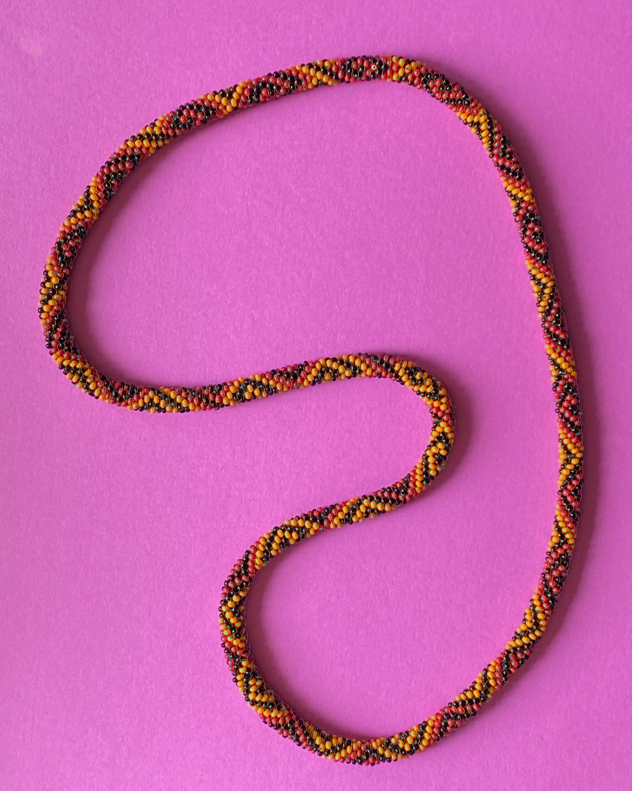
Validation is development selection evidence. Previously revealed R296 reserved cases are retrospective final checks, excluded from this run's optimization; no fresh independent holdout remains. Central/peripheral and low modeled visibility statistics are in each evaluation export.
| Model | Split | Large compatible | Large containment | Patches compatible | Unsupported sites | Min plane gap |
|---|---|---|---|---|---|---|
| 767 | train | 113/363 | 67.2% | 850/1239 | 1487 | 0.00883 |
| 767 | validation | 9/21 | 74.1% | 66/87 | 1487 | 0.00883 |
| 767 | reserved | 6/21 | 61.7% | 55/84 | 1487 | 0.00883 |
| 767 | buffer | 3/42 | 49.4% | 71/133 | 1487 | 0.00883 |
| 694 | train | 71/363 | 63.2% | 827/1239 | 1593 | 0.01082 |
| 694 | validation | 6/21 | 64.1% | 67/87 | 1593 | 0.01082 |
| 694 | reserved | 2/21 | 53.4% | 54/84 | 1593 | 0.01082 |
| 694 | buffer | 9/42 | 61.5% | 81/133 | 1593 | 0.01082 |
| 121 | train | 61/363 | 60.0% | 808/1239 | 1853 | 0.00706 |
| 121 | validation | 4/21 | 60.5% | 62/87 | 1853 | 0.00706 |
| 121 | reserved | 1/21 | 60.4% | 54/84 | 1853 | 0.00706 |
| 121 | buffer | 6/42 | 54.5% | 87/133 | 1853 | 0.00706 |
| 631 | train | 84/363 | 61.4% | 784/1239 | 1872 | 0.01204 |
| 631 | validation | 4/21 | 60.6% | 53/87 | 1872 | 0.01204 |
| 631 | reserved | 4/21 | 63.9% | 55/84 | 1872 | 0.01204 |
| 631 | buffer | 2/42 | 50.9% | 71/133 | 1872 | 0.01204 |
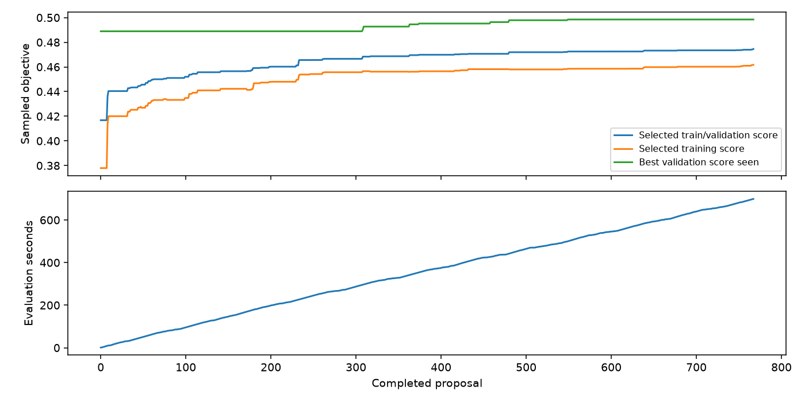
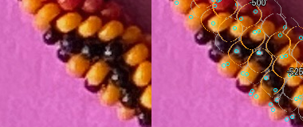
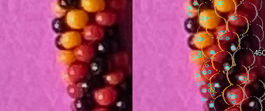
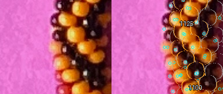
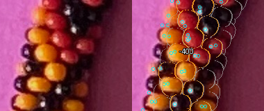
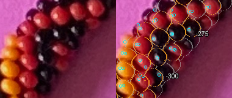
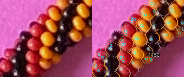
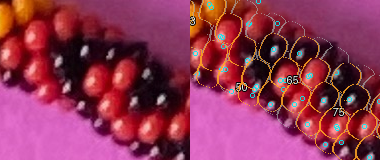
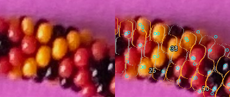
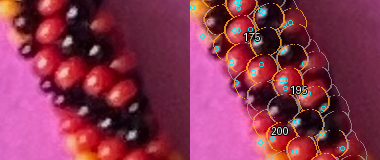
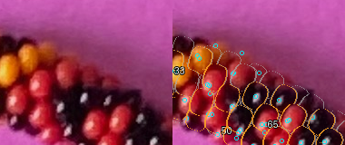
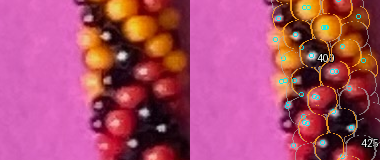
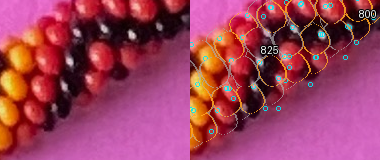
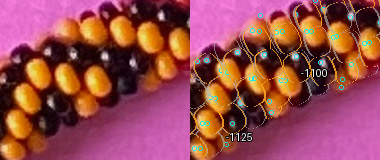
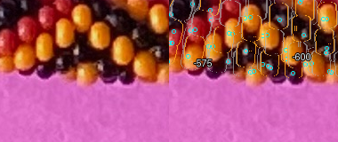

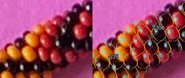